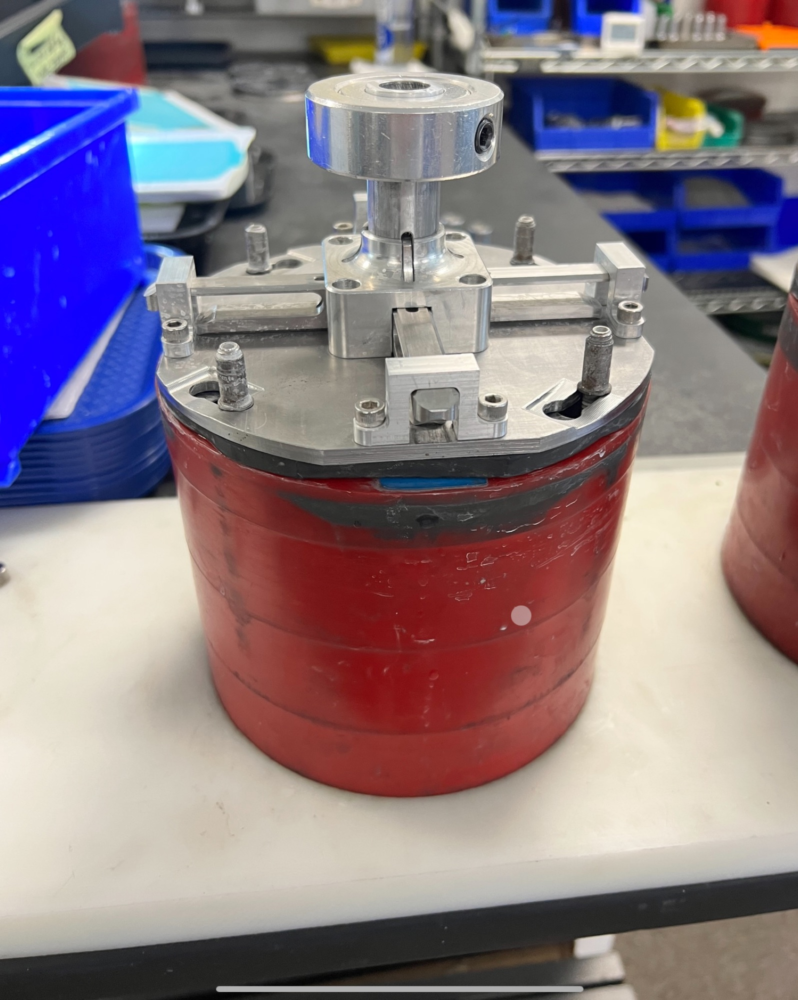
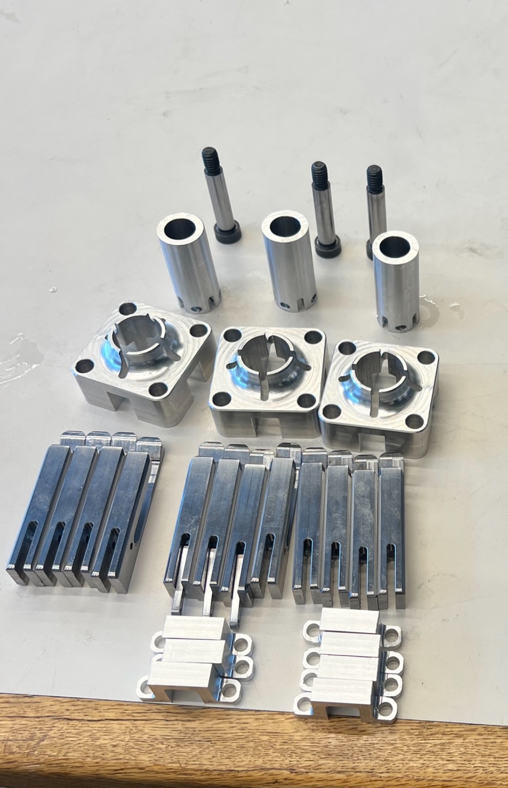

I fabricated 10 quick-release harperizer lids with three other interns at Mechanical Advantage. The company runs two harperizers daily to finish metal parts for the biomedical industry, and their store-bought lids were slow — 1 to 2 minutes each to put on and take off, multiple times a day.

Each new lid contained 14 custom, precision-machined metal parts. Across 10 lids, that's 140 functional parts that had to be designed, programmed, and cut before anything could be assembled.

The Bottleneck
The part that mattered most was the interaction between the claws and the machine itself. The claws were machined from 1018 low carbon steel — a metal that's genuinely difficult to cut cleanly — and each one took about 2 hours on the mill. At 4 claws per lid across 10 lids, that penciled out to over 80 hours of machining time on claws alone.
The claw-and-lid release mechanism, cycling — the part that actually mattered.
Automating The Reload
To claw back that time (sorry), I designed a "bar-pull" mechanism that automatically pulled fresh stock material out through the 4th axis between cycles. That meant the mill no longer needed someone standing over it to reload between parts — it could run unattended overnight, turning out a full set of 4 claws in 8-hour chunks.